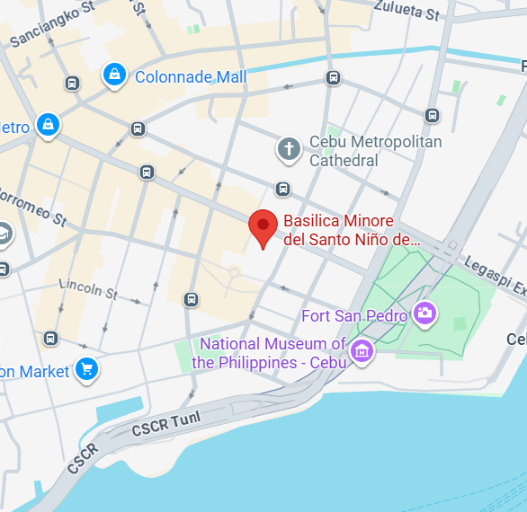
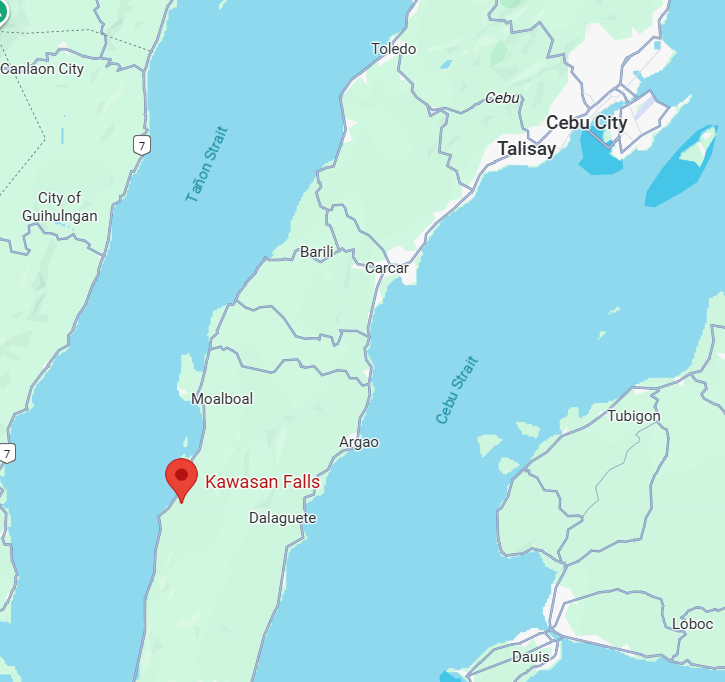
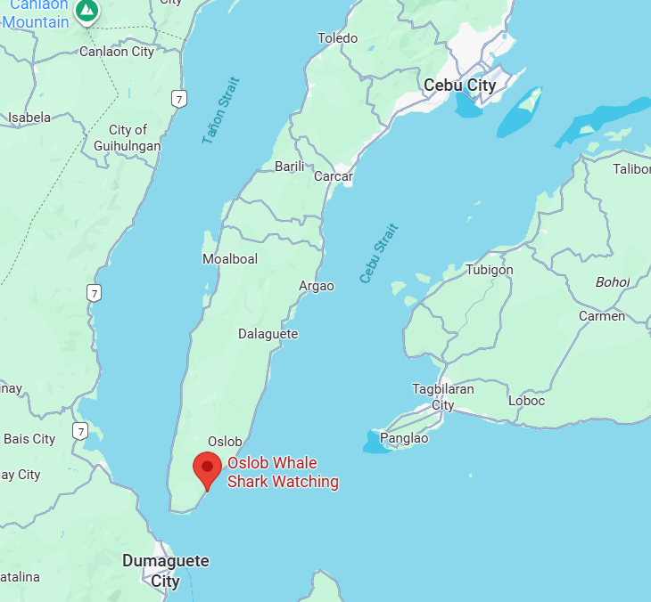

Directions to the Top 5 Spots
1. Magellan's Cross
- Location: Downtown Cebu City, next to Basilica del Santo Niño.
- From Mactan-Cebu Airport: 30–40 minutes by taxi.
- Tip: Best explored along with other historical sites nearby.

2. Basilica del Santo Niño
- Location: Next to Magellan’s Cross.
- From Cebu IT Park or Ayala Center: 20–30 minutes by taxi or jeepney.
- Tip: Visit early morning to avoid heavy crowds.
3. Temple of Leah
- Location: Busay Hills, Cebu City.
- From Cebu City proper: 20–30 minutes by taxi or private car via Cebu Transcentral Highway.
- Tip: Combine your trip with nearby Sirao Flower Garden.

4. Kawasan Falls
- Location: About 3–4 hours from Cebu City.
- From South Bus Terminal: Take a bus bound for Badian or Bato via Barili and ask to be dropped off at Kawasan Falls.
- Tip: Bring swimwear and extra clothes; canyoneering tours are available for adventure seekers.

5. Oslob Whale Shark Watching
- Location: Oslob, South Cebu. Travel time is 3–4 hours.
- From South Bus Terminal: Take a bus bound for Bato via Oslob and ask to be dropped off at the whale shark briefing station.
- Tip: Whale shark watching is best done early in the morning (6 AM to 12 NN).